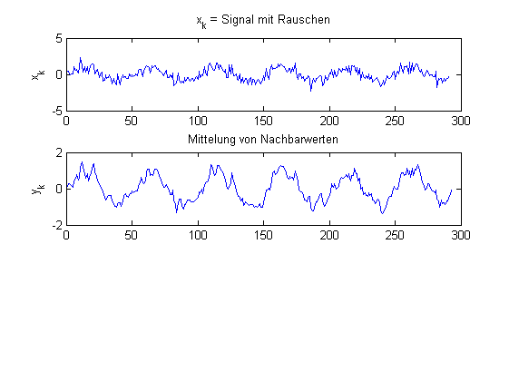
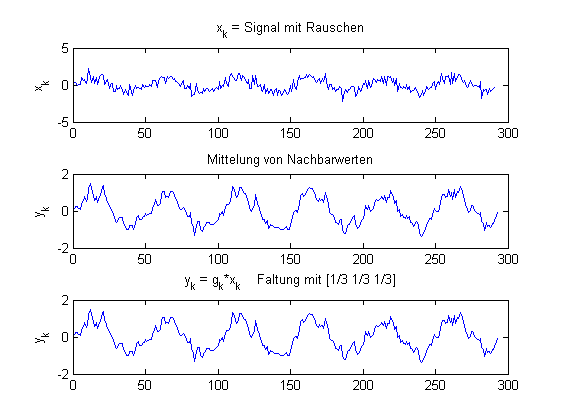

Contents
% faltung.m % DSV - Skript Prof. Dr. B .Wirnitzer % 7.2.03,24.7.12
Vektor t von 0 bis 0.29 in 0.001 Schritten
t = (0:0.001:0.29);
Sinusschwingung mit 20 Hz
F = 20; x_k = sin (2*pi*F*t);
Rauschen wird erzeugt und addiert
noise=0.5*randn(size(t)); x_k=x_k+noise;
Glättung durch Mittelung benachbarter Werte
== Verschobene Signale addieren
y_k = ([x_k,0,0] + [0,x_k,0] + [0 ,0, x_k])/3;
Darstellung
figure(1); subplot(3,1,1); plot(x_k); ylabel('x_k') title('x_k = Signal mit Rauschen'); subplot(3,1,2); plot(y_k); ylabel('y_k') title('Mittelung von Nachbarwerten');
Faltung mit g[k]
g_k=[1/3 1/3 1/3]; y_k=conv(g_k,x_k); subplot(3,1,3); plot(y_k); ylabel('y_k') title('y_k = g_k*x_k Faltung mit [1/3 1/3 1/3]');